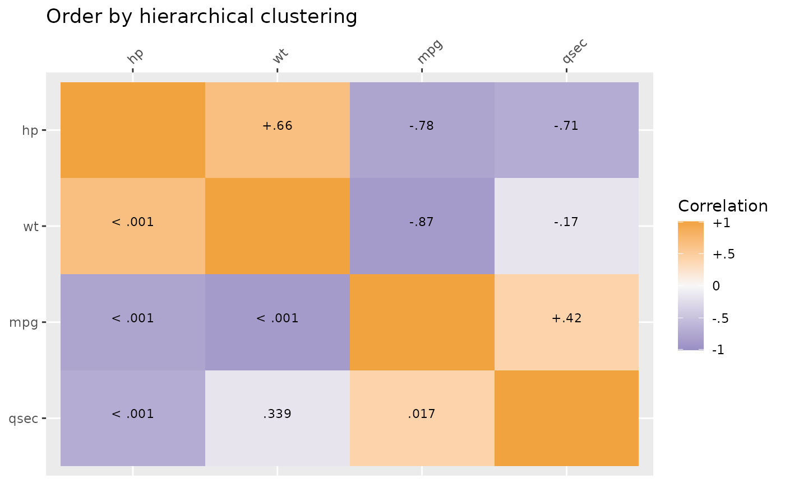
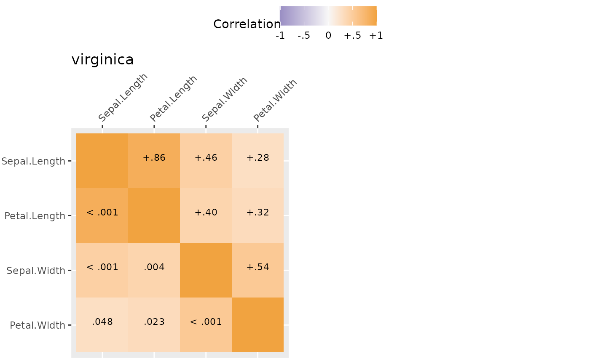
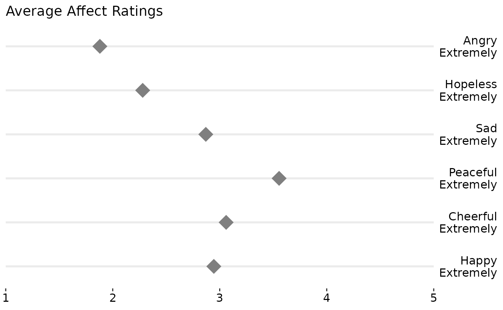

Exploratory and Descriptive Statistics and Plots
Source:vignettes/exploratory-vignette.Rmd
exploratory-vignette.RmdTo start, load the package.
Descriptive Statistics
The egltable() function calculates basic descriptive
statistics.
| M (SD) | |
|---|---|
| mpg | 20.09 (6.03) |
| hp | 146.69 (68.56) |
| qsec | 17.85 (1.79) |
| wt | 3.22 (0.98) |
| vs | 0.44 (0.50) |
The strict argument can be used if variables are
categorical but are not coded as factors. In this case, vs
has two levels: 0 and 1 and the frequency and percentage of each are
shown instead of the mean and standard deviation.
| M (SD)/N (%) | |
|---|---|
| mpg | 20.09 (6.03) |
| hp | 146.69 (68.56) |
| qsec | 17.85 (1.79) |
| wt | 3.22 (0.98) |
| vs | |
| 0 | 18 (56.2%) |
| 1 | 14 (43.8%) |
egltable() also allows descriptive statistics to be
broken down by another variable by using the g argument.
This not only separates results by group but also calculates bivariate
tests of the differences between groups and effect sizes. For example,
t-tests for continuous variables and two groups or chi-square tests for
categorical variables. For more than two groups, ANOVAs are used.
| 0 M (SD)/N (%) | 1 M (SD)/N (%) | Test | |
|---|---|---|---|
| mpg | 17.15 (3.83) | 24.39 (6.17) | t(df=30) = -4.11, p < .001, d = 1.48 |
| hp | 160.26 (53.91) | 126.85 (84.06) | t(df=30) = 1.37, p = .180, d = 0.49 |
| qsec | 18.18 (1.75) | 17.36 (1.79) | t(df=30) = 1.29, p = .206, d = 0.47 |
| wt | 3.77 (0.78) | 2.41 (0.62) | t(df=30) = 5.26, p < .001, d = 1.89 |
| vs | Chi-square = 0.91, df = 1, p = .341, Phi = 0.17 | ||
| 0 | 12 (63.2%) | 6 (46.2%) | |
| 1 | 7 (36.8%) | 7 (53.8%) |
For very skewed continuous variables, non-parametric statistics and
tests may be more appropriate. These can be generated using the
parametric argument. For chi-square tests with small cell
sizes, simulated p-values also can be generated.
egltable(c("mpg", "hp", "qsec", "wt", "vs"),
g = "am", data = mtcars, strict = FALSE,
parametric = FALSE)| 0 Mdn (IQR)/N (%) | 1 Mdn (IQR)/N (%) | Test | |
|---|---|---|---|
| mpg | 17.30 (4.25) | 22.80 (9.40) | KW chi-square = 9.79, df = 1, p = .002 |
| hp | 175.00 (76.00) | 109.00 (47.00) | KW chi-square = 4.07, df = 1, p = .044 |
| qsec | 17.82 (2.00) | 17.02 (2.15) | KW chi-square = 1.28, df = 1, p = .258 |
| wt | 3.52 (0.41) | 2.32 (0.84) | KW chi-square = 16.87, df = 1, p < .001 |
| vs | Chi-square = 0.91, df = 1, p = .341, Phi = 0.17 | ||
| 0 | 12 (63.2%) | 6 (46.2%) | |
| 1 | 7 (36.8%) | 7 (53.8%) |
Paired Data
We have already seen how to compare descriptives across groups when
the groups were independent. egltable() also supports using
groups to test paired samples. To use this, the variable passed to the
grouping argument, g must have exactly two levels and you
must also pass a variable that is a unique ID per unit and specify
paired = TRUE.
By default for continuous, paired data, mean and standard deviations are presented and a paired samples t-test is used. A pseudo Cohen’s d effect size is calculated as the mean of the change score divided by the standard deviation of the change score. If there are missing data, its possible that the mean difference will be different than the difference in means as the means are calculated on all available data, but the effect size can only be calculated on complete cases.
## example with paired data
egltable(
vars = "extra",
g = "group",
data = sleep,
idvar = "ID",
paired = TRUE)| 1 M (SD) | 2 M (SD) | Test | |
|---|---|---|---|
| extra | 0.75 (1.79) | 2.33 (2.00) | t(df=9) = 4.06, p = .003, d = 1.28 |
If we do not want to make parametric assumptions with continuous
variables, we can set parametric = FALSE. In this case the
descriptives are medians and a paired Wilcoxon test is used. In this
dataset there are ties and a warning is generated about ties and zeroes.
This warning is generally ignorable, but if these were central
hypothesis tests, it may warrant further testing using, for example,
simulations which are more precise in the case of ties.
egltable(
vars = "extra",
g = "group",
data = sleep,
idvar = "ID",
paired = TRUE,
parametric = FALSE)#> Warning in wilcox.test.default(widedat$dv2, widedat$dv1, paired = TRUE, :
#> cannot compute exact p-value with ties
#> Warning in wilcox.test.default(widedat$dv2, widedat$dv1, paired = TRUE, :
#> cannot compute exact p-value with zeroes| 1 Mdn (IQR) | 2 Mdn (IQR) | Test | |
|---|---|---|---|
| extra | 0.35 (1.88) | 1.75 (3.28) | Wilcoxon Paired V = 45.00, p = .009 |
We can also work with categorical paired data. The following code creates a categorical variable, the tertiles of chick weights measured over time. The chick weight dataset has many time points, but we will just use two.
## paired categorical data example
## using data on chick weights to create categorical data
tmp <- subset(ChickWeight, Time %in% c(0, 20))
tmp$WeightTertile <- cut(tmp$weight,
breaks = quantile(tmp$weight, c(0, 1/3, 2/3, 1), na.rm = TRUE),
include.lowest = TRUE)No special code is needed to work with categorical variables.
egltable() recognises categorical variables and uses
McNemar’s test, which is a chi-square of the off diagonals, which tests
whether people (or chicks in this case) change groups equally over time
or preferentially move one direction. In this case, a significant result
suggests that over time chicks’ weights change preferentially one way
and the descriptive statistics show us that there is an increase in
weight tertile from time 0 to time 20.
| 0 M (SD)/N (%) | 20 M (SD)/N (%) | Test | |
|---|---|---|---|
| weight | 41.06 (1.13) | 209.72 (66.51) | t(df=45) = 17.10, p < .001, d = 2.52 |
| WeightTertile | McNemar’s Chi-square = 39.00, df = 3, p < .001 | ||
| [39,41.7] | 32 (64.0%) | 0 (0.0%) | |
| (41.7,169] | 18 (36.0%) | 14 (30.4%) | |
| (169,361] | 0 (0.0%) | 32 (69.6%) |
Correlation Summaries
For continuous variables, correlation matrices are commonly examined. This is especially true for structural equation models or path analyses.
The SEMSummary() function provides a simple way to
generate these under various options. There is a formula interface,
similar to lm() or other regression models. Missing data
can be handled using listwise deletion, pairwise present data, or full
information maximum likelihood (FIML). When assumptions are met, FIML is
less biased and uses all available data, and is the default.
m <- SEMSummary(~ mpg + hp + qsec + wt, data = mtcars)
corTab <- APAStyler(m, type = "cor", stars = TRUE)
#> N M SD 1. 2. 3. 4.
#> 1. mpg 32 20.09 6.03 - -0.78*** 0.42* -0.87***
#> 2. hp 32 146.69 68.56 - -0.71*** 0.66***
#> 3. qsec 32 17.85 1.79 - -0.17
#> 4. wt 32 3.22 0.98 -
#>
#> Percentage of coverage for each pairwise covariance or correlation
#>
#> mpg hp qsec wt
#> mpg 1 1 1 1
#> hp 1 1 1
#> qsec 1 1
#> wt 1These correlations can be nicely formatted into a table.
| N | M | SD | 1. | 2. | 3. | 4. | |
|---|---|---|---|---|---|---|---|
| 1. mpg | 32 | 20.09 | 6.03 | - | -0.78*** | 0.42* | -0.87*** |
| 2. hp | 32 | 146.69 | 68.56 | - | -0.71*** | 0.66*** | |
| 3. qsec | 32 | 17.85 | 1.79 | - | -0.17 | ||
| 4. wt | 32 | 3.22 | 0.98 | - |
Plot methods exist for SEMSummary() objects. By default,
above the diagonal are correlations and below the diagonal are p-values.
However, the type argument can be set (see ?corplot) to get
all values to be either correlations or p-values. By default, another
useful feature is that hierarchical clustering is used to group similar
variables together in clusters, provided a more useful sorting of the
data than many “default” correlation matrices. If a specific order is
desired, you can use the order = "asis" option to keep the
variable order the same as written in SEMSummary().

Grouped Correlations
Correlations also can be broken down by group. Here results are separated by species which are automaticaly used as the title of each graph.
mg <- SEMSummary(~ Sepal.Length + Petal.Length +
Sepal.Width + Petal.Width | Species,
data = iris)
plot(mg)
#> $`1`#>
#> $`2`
#>
#> attr(,"class")
#> [1] "list" "ggarrange"Likert Scale Plots
In much of psychological and consumer/market research, likert rating scales are used. For example, rating a question/item from “Strongly DISagree” to “Strongly Agree” or rating satisfaction from “Not at all” to “Very Satisfied” or adjectives that capture mood/affect from “Not at all” to “Extremely”. Likert plots aim to show these results clearly and aid interpretation by presenting the anchors as well.
The following code creates some simulated data, summarizes it, adds the necessary labels/anchors, and creates a nice plot.
## simulate some likert style data
set.seed(1234)
d <- data.table(
Happy = sample(1:5, 200, TRUE, c(.1, .2, .4, .2, .1)),
Cheerful = sample(1:5, 200, TRUE, c(.1, .2, .2, .4, .1)),
Peaceful = sample(1:5, 200, TRUE, c(.1, .1, .2, .4, .2)),
Sad = sample(1:5, 200, TRUE, c(.1, .3, .3, .2, .1)),
Hopeless = sample(1:5, 200, TRUE, c(.3, .3, .2, .2, 0)),
Angry = sample(1:5, 200, TRUE, c(.4, .3, .2, .08, .02)))
dmeans <- melt(d, measure.vars = names(d))[,
.(Mean = mean(value, na.rm = TRUE)), by = variable]
dmeans[, Low := paste0(variable, "\nNot at all")]
dmeans[, High := paste0(variable, "\nExtremely")]
dmeans[, variable := as.integer(factor(variable))]
## view the summarised data
print(dmeans)
#> variable Mean Low High
#> <int> <num> <char> <char>
#> 1: 1 2.945 Happy\nNot at all Happy\nExtremely
#> 2: 2 3.060 Cheerful\nNot at all Cheerful\nExtremely
#> 3: 3 3.555 Peaceful\nNot at all Peaceful\nExtremely
#> 4: 4 2.870 Sad\nNot at all Sad\nExtremely
#> 5: 5 2.280 Hopeless\nNot at all Hopeless\nExtremely
#> 6: 6 1.880 Angry\nNot at all Angry\nExtremely
gglikert("Mean", "variable", "Low", "High", data = dmeans,
xlim = c(1, 5),
title = "Average Affect Ratings")
## create a grouping variable
dg <- cbind(d, Group = ifelse(
d$Happy > mean(d$Happy, na.rm = TRUE),
"General Population", "Depressed"))
dgmeans <- melt(dg, measure.vars = names(d), id.vars = "Group")[,
.(Mean = mean(value, na.rm = TRUE)), by = .(variable, Group)]
dgmeans[, Low := paste0(variable, "\nNot at all")]
dgmeans[, High := paste0(variable, "\nExtremely")]
dgmeans[, variable := as.integer(factor(variable))]
## view the summarised data
print(dgmeans)
#> variable Group Mean Low
#> <int> <char> <num> <char>
#> 1: 1 General Population 3.510791 Happy\nNot at all
#> 2: 1 Depressed 1.655738 Happy\nNot at all
#> 3: 2 General Population 3.043165 Cheerful\nNot at all
#> 4: 2 Depressed 3.098361 Cheerful\nNot at all
#> 5: 3 General Population 3.633094 Peaceful\nNot at all
#> 6: 3 Depressed 3.377049 Peaceful\nNot at all
#> 7: 4 General Population 2.906475 Sad\nNot at all
#> 8: 4 Depressed 2.786885 Sad\nNot at all
#> 9: 5 General Population 2.309353 Hopeless\nNot at all
#> 10: 5 Depressed 2.213115 Hopeless\nNot at all
#> 11: 6 General Population 1.834532 Angry\nNot at all
#> 12: 6 Depressed 1.983607 Angry\nNot at all
#> High
#> <char>
#> 1: Happy\nExtremely
#> 2: Happy\nExtremely
#> 3: Cheerful\nExtremely
#> 4: Cheerful\nExtremely
#> 5: Peaceful\nExtremely
#> 6: Peaceful\nExtremely
#> 7: Sad\nExtremely
#> 8: Sad\nExtremely
#> 9: Hopeless\nExtremely
#> 10: Hopeless\nExtremely
#> 11: Angry\nExtremely
#> 12: Angry\nExtremely
gglikert("Mean", "variable", "Low", "High",
colour = "Group",
data = dgmeans,
xlim = c(1, 5),
title = "Average Affect Ratings") +
scale_colour_manual(
values = c("Depressed" = "black",
"General Population" = "grey70"))